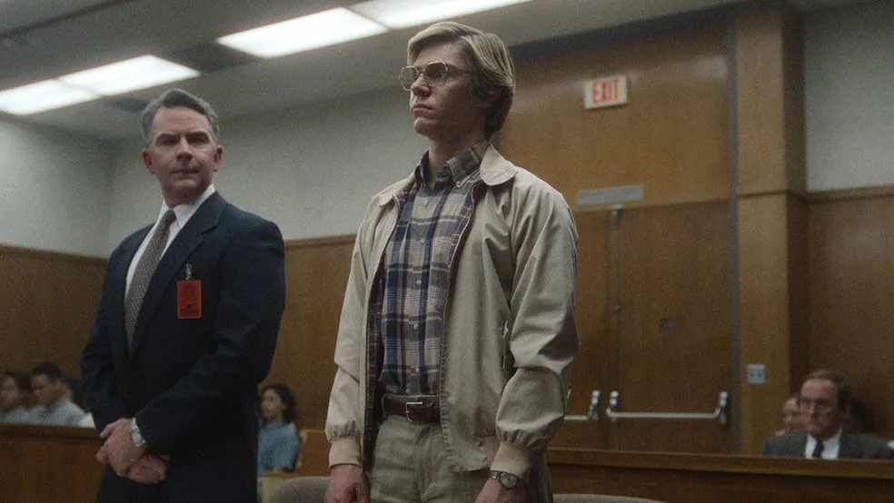

A produção da Netflix sobre o serial killer Jeffrey Dahmer é um sucesso de audiência, mas também alvo de críticas de pessoas que classificam a série como "insensível". "Como negros, devemos boicotar (o programa). O que ele fez com nossos filhos negros é doentio", tuitou o rapper Boosie BadAzz. Dahmer matou 17 meninos e jovens, muitos dos quais eram negros e gays, entre 1978 e 1991. A irmã de uma de suas vítimas descreveu a série Dahmer: Um Canibal Americano como "cruel e imprudente". Rita Isbell, cujo irmão Errol Lindsey tinha 19 anos quando Dahmer o assassinou, fez uma declaração comovente no julgamento do assassino em 1992, mas disse que não foi informada de que essa história seria retratada na série criada por Ryan Murphy, o mesmo idealizador de Glee e Pose.
"Quando vi parte da série, isso me incomodou, especialmente quando me vi, quando vi meu nome na tela e essa senhora dizendo palavra por palavra exatamente o que eu disse", disse Isbell ao site Insider. A irmã de Lindsey disse que a Netflix deveria ter dado parte do dinheiro da série para os filhos e netos das vítimas. "Se a série os beneficiasse de alguma forma, não seria tão cruel e imprudente. É triste que eles estejam apenas ganhando dinheiro com essa tragédia. Isso é apenas ganância." Na semana passada, o primo de Lindsey, Eric Perry, tuitou que a família estava descontente com a série.
"Está nos retraumatizando, e para quê?", disse ele. "De quantos filmes, séries, documentários precisamos? Retratar minha prima tendo um colapso emocional no tribunal na frente do homem que torturou e assassinou seu irmão é INSANO. INSANO."Os crimes de Dahmer também envolveram canibalismo e necrofilia. Ele foi condenado em 1992 e assassinado na prisão dois anos depois.Anne E. Schwartz, a jornalista que divulgou a história de seus crimes em 1991, disse ao jornal britânico The Independent que a série "sacrificou a precisão pela dramaticidade".A ex-repórter disse que os produtores fizeram uso de uma "licença poética" em relação a muitos detalhes importantes e que a série "não tem muita semelhança com os fatos do caso".Ele também observou que a "representação dos policiais da cidade como racistas e homofóbicos estava incorreta".

Recordes de audiência
A Netflix também foi criticada por inicialmente categorizá-lo como um programa LGBTQIA+. Esse rótulo foi posteriormente removido.A controvérsia não impediu que o programa obtivesse os maiores números de audiência em uma primeira semana de exibição para uma série totalmente nova do serviço de streaming desde que seu sistema de medição entrou em operação em junho de 2021, de acordo com o site IndieWire.
A série, estrelada por Evan Peters como Dahmer, foi assistida por 196,2 milhões de horas em sua primeira semana completa e, atualmente, é o programa de TV da Netflix mais visto em mais de 60 países.A BBC News entrou em contato com a Netflix para que a empresa comentasse sobre as críticas, mas não obteve resposta.A sinopse oficial da série diz que ela "expõe crimes inconcebíveis, focando nas vítimas e comunidades afetadas pelo racismo sistêmico e falhas institucionais do policiamento que permitiram que um dos mais notórios assassinos em série dos Estados Unidos prosseguisse com sua fúria assassina à vista de todos por mais de uma década".
Impossível de assistir
As críticas da série foram variadas, com Stuart Heritage, do jornal britânico The Guardian, chamando-a de "quase nauseantemente impossível de assistir"."O pior de tudo, até certo ponto, é a escolha da abordagem da série. A única coisa boa que uma série como essa pode fazer é tirar os holofotes do assassino e mostrar quem essas pessoas realmente eram. Mas infelizmente ela está muito fascinada com sua estrela principal para fazer isso."Daniel Fienberg, do site The Hollywood Reporter, chamou de "mistura irritante", acrescentando que "reduzir a maioria das vítimas e suas famílias à dor é mais explorar essa dor do que honrar qualquer memória".